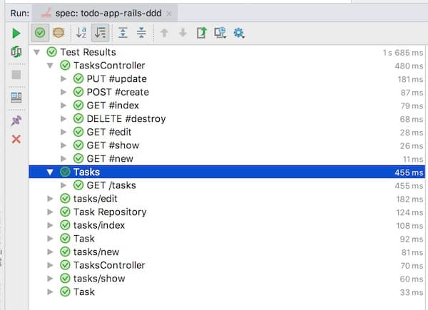

Last week’s post was about how hexagonal architecture results in fast, mock-free tests around your core domain. Unfortunately, that does not remove all mocks, yet it groups them in the same, less critical, zone. In last week’s code sample, this was the controller. I concluded that at least, this was easier to manage. Let’s see how.
This is the 7th post in a series about avoiding mocks. If you haven’t, you might start from the beginning.
Mock concentration
Let’s get back to the last post’s code sample. As a reminder, it’s a very basic TODO app built on Rails. I extracted the domain part, the tasks, in a core domain area. This allowed to push all mocks out of this section. A consequence though, is that all mocks gathered in the controller test. Here is the controller code :
1 2 3 4 5 6 7 8 9 10 11 12 13 14 15 16 17 18 19 20 21 22 23 24 25 26 27 28 29 30 31 32 33 34 35 36 37 38 39 40 41 42 43 44 45 46 47 48 49 50 51 52 53 54 55 56 57 58 59 60 61 62 63 64 65 66 67 68 69 | |
The controller is now dealing both with the Twitter connection and the database. This is visible in the controller test :
1 2 3 4 5 6 7 8 9 10 11 12 13 14 15 16 17 18 19 20 21 22 23 24 25 26 27 28 29 30 31 32 33 34 35 36 37 38 39 40 41 42 | |
We need to stub out the twitter API for most tests. We are also still using a mock to verify that the tweet is sent. Finally, as we can see from the test execution times, we are still using the database in some tests.

If the project grew large this would become an issue. Sadly, mocking is often the fix people jump on …
💡 Mocking is the unfortunate quick fix to slow tests.
From a mocking point of view, our current controller test can seem worse than before ! There’s something pretty effective we can do though !
In memory fakes
Instead of stubbing and mocking in every test, let’s write a full fledged in-memory fake that does the job we need. We could then install it once and for all, and forget about it !
Actually, this is nothing new. This is exactly what Rails provides out of the box with ActionMailer::Base.delivery_method = :test.
Here’s how we could do the same thing for our Twitter Client.
spec/rails_helper.rb
1 2 3 4 5 6 7 8 9 10 11 12 13 14 15 16 17 18 19 | |
spec/controllers/tasks_controller_spec.rb
1 2 3 4 5 6 7 | |
Simple isn’t it ?
Wait a sec …
There’s a catch though … How do we make sure that this fake is behaving the same way as the real thing ?
Let’s run the same tests on both ! We could mimic the twitter API in our fake, but that might not be a great idea. Do you remember the moto “Always wrap your 3rd parties” ? It takes all its meaning here, for 2 reasons.
The first is to make faking easier. We can build a minimal wrapper API that is just enough for our use. By keeping this interface small, we’ll make it a lot easier to fake.
The second reason is that we can write real integration tests on the 3rd party through this wrapper. They’d look like ordinary unit tests, except that they’d end up calling the real 3rd party in a sandbox. They are usually pretty slow, but as 3rd parties don’t change everyday, that’s ok. We can ensure up-front that integration will go well. As a bonus, we can be very fast to detect and contain changes to online services. (I’m looking at you Scrappers!)
Here is what it would look like for our Twitter client :
lib/infrastructure/twitter_client.rb
1 2 3 4 5 6 7 8 9 10 11 12 13 14 15 16 17 18 19 20 21 22 23 24 25 26 27 28 29 | |
As you can see, we renamed update to tweet in the wrapper. We’d have to update the calls accordingly. Let’s look at the tests.
spec/lib/Infrastructure/twitter_client_spec.rb
1 2 3 4 5 6 7 8 9 10 11 12 13 14 15 16 17 18 19 20 21 22 23 24 25 26 27 | |
We had to add a search method to our interface for the sake of testing. This should remain “For testing only”. We’d also adapt the controller test to use this search_tweets method.
Let’s look at where we stand now. We’re injecting each mock only once. Tests are fast yet straightforward, almost as if they were testing the real thing. Doing so, we’ve split our system in cohesive parts and we’ve wrapped our 3rd parties. We’ve actually done a lot more than removing mocks ! Mocking really is a design smell.
💡 Merciless mock hunting will improve the design of your system !
Last word about implementation
Sometimes, this 3rd party wrapper can become pretty complicated. Try to reuse as much of it as possible between the real and the fake. For example, an ORM, like ActiveRecord for example, is a wrapper around the database. Reimplementing a fake ORM would be real challenge. We’re far better plugin it on top of SQLite instead !
References
Smart people have already spoken and written about this subject. If you want to learn more, I recommend that you have a look at Aslak Hellesøy’s Testable Architecture talk. James Shore, the author of The Art of Agile Development, also wrote a pattern language called Testing Without Mock.
Next week
This was the 7th blog post in a series about how to avoid mocks. Hopefully, I’m reaching the end ! Next week’s post should be the last in series, and deal with a few remaining points. What to do when you really need a mock ? What about mocking and legacy code ? What changes when mocking with statically typed languages ?